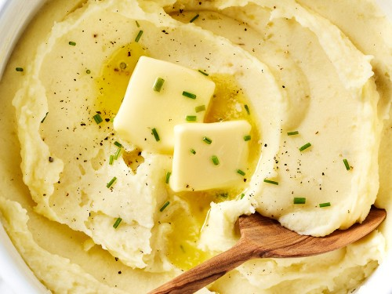

Recipe for delicious mashed potatoes

Description
This mashed potato recipe is perfect if you're looking for good,
old-fashioned mashed potatoes. Made with just potatoes, milk, butter, and
optional garlic, this go-to recipe makes a classic holiday dish. Learn how
to make mashed potatoes that come out smooth, creamy, and delicious every
time! Serve with gravy or extra butter on top.
Ingredients
- 2 pounds baking potatoes, peeled and quartered
- 3 cloves garlic, peeled, or to taste (Optional)
- 1 cup milk
- 2 tablespoons butter
- salt and ground black pepper to taste
Steps
here's a brief overview of what you can expect when you make these mashed potatoes:
- Boil the potatoes: Add the potatoes and garlic to a large pot of salted, boiling water. Reduce the heat and simmer until the potatoes are tender.
- Heat the milk: Heat the milk and butter in a saucepan until the butter is melted.
- Mash the potatoes: Drain the potatoes, then return them to the pot. Slowly add the warm milk mixture, mashing with a potato masher or blending with a mixer until the potatoes are smooth and creamy. Season to taste.